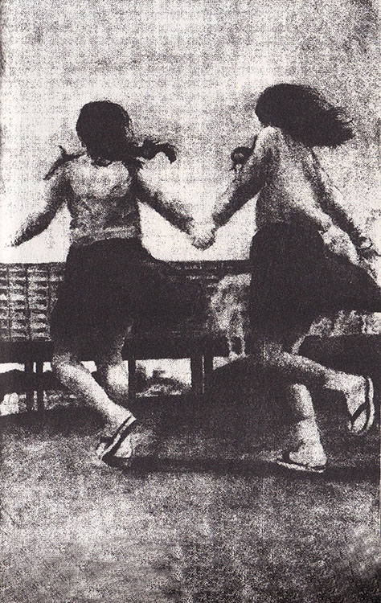
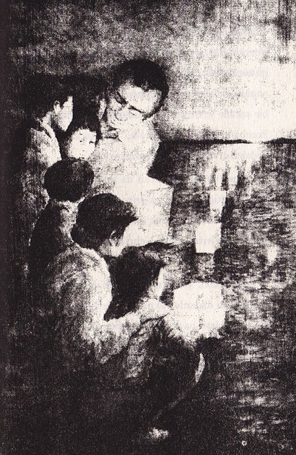

Aile yola çıktığında hava daha da ısınmış, toz bulutu, kalabalık ve hareketli caddenin üstünü kaplamıştı. Sadako önden giderek en iyi arkadaşı Şizuko’nun evine doğru koştu. İkisi anaokulundan beri arkadaştılar. Sadako, Şizuko ile her zaman dost kalacaklarından emindi.
Şizuko arkadaşını görünce el sallayıp ona doğru yürüdü. Sadako içini çekerek “Şu kız biraz daha hızlı yürüse ya!” diye düşündü. Ve dayanamayıp, “Kaplumbağa gibi yürümesene!” diye seslendi. “Haydi, acele edelim, hiçbir şeyi kaçırmayalım.”
Bayan Sasaki, “Sadako, bu sıcakta o kadar hızlı yürüme,” diye uyardı onu. Ama bunu söylemekte geç kalmıştı, çünkü iki kız da yarış edercesine koşarak caddeye çıkmışlardı bile.
Bayan Sasaki kaşlarını çatarak “Sadako birinciliği kimseye kaptırmamak için hep acele ettiğinden durup kimseyi dinlemez,” dedi.
Bay Sasaki ise gülerek, “İyi de, sen onu hiç koşacağı, zıplayacağı veya atlayacağı yerde yürürken gördün mü?” diye sordu. Bunu söylerken sesinde övünme seziliyordu, çünkü Sadako çok hızlı ve güçlü bir koşucuydu.
Halk, Barış Parkı’nın girişindeki anıtın yanından sessizce geçiyordu. Duvarlarda ölülerin ve harabeye dönmüş şehirde ölmekte olanların fotoğrafları vardı. Atom bombası, Hiroşima’yı çöle çevirmişti.
Sadako, insanı dehşete düşüren fotoğraflara bakmak istemiyordu. Şizuko’nun elini sıkıca tuttu ve oradan hemen uzaklaştılar.
Sadako, “Bombayı hatırlıyorum,” diye fısıldadı arkadaşına. “Sanki milyonlarca güneş aynı anda parlıyordu. Üstelik bombanın sıcaklığı nedeniyle gözlerime dikenler batıyor gibiydi.”

Şizuko hayretle, “Sen bunu nasıl hatırlayabiliyorsun?” dedi. “O zaman daha bebektin.”
Sadako inatla, “Evet hatırlıyorum,” diye diretti.
Buda rahiplerinin ve belediye başkanının konuşmalarından sonra, barış sembolü olan beyaz güvercinlerin yüzlercesi, kafeslerinden gökyüzüne bırakıldı. Kuşlar atomik kubbenin çevresinde bir süre uçuştular. Sadako, kuşların gökyüzünün özgürlüğüne uçan ölülerin ruhları gibi göründüklerini düşündü.
Tören bittikten sonra Sadako diğerlerini, pamuk helva satan yaşlı kadına götürdü. Helva, geçen yılkinden çok daha lezzetliydi.
Gün, her zaman olduğu gibi çabuk geçti. Sadako’ya göre günün en iyi kısmı, tezgâhlarda satılan eşyalara bakmak ve güzel yemeklerin kokusuydu. Küçük dükkânlarda, fasulye kekinden çıtır çıtır ufak çekirgelere kadar her şey satılıyordu. Günün en kötü kısmı ise insanlarda geçmişin bıraktığı çirkin yara izlerini görmekti. Atom bombası bu insanları o kadar kötü bir şekilde yakmıştı ki, insan gibi görünmüyorlardı. Bombanın kurbanları yanına yaklaşacak olurlarsa, Sadako, oradan hemen uzaklaşıyordu.

Güneş batınca heyecan da artmıştı. Donanmanın fırlattığı havai fişeklerin göz kamaştırıcı ışıkları gökyüzünde giderek solmaya yüz tutunca, halk kâğıt fenerlerini Ohta Nehri’nin banklarına kadar götürdü.
Bay Sasaki, yanlarında getirdikleri altı fenerin mumlarını dikkatle yaktı. Fenerlerde atom bombasından dolayı hayatlarını kaybetmiş olan akrabalarının adları yazıyordu. Sadako, Oba’nın adını kendi fenerinin yanına yazmıştı. Mumlar pırıl pırıl yanınca, Ohta Nehri’ne indirilen fenerler, ateş böceği sürüsü gibi denize doğru ilerlemeye başladı.
Sadako o gece, gündüz olan biten her şeyi hatırlayıp yatakta uzun süre uyanık kaldı ve Masahiro’nun örümcek konusunda haksız olduğunu düşündü. Çünkü örümcek ona uğurlu gelmişti. Sabah olunca, bunu ona hatırlatacaktı.